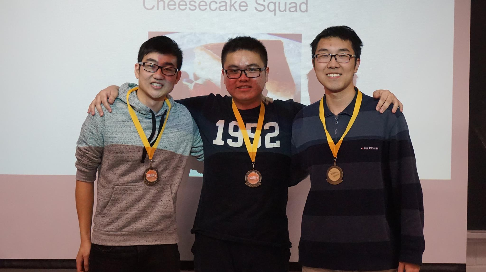

SEEK 2015 was RSX's first ever competition! We hosted sixteen teams, eight humans and eight "Zeitans"
whose job was to collect blocks of U-243, and put their colonies into enemy territory. The winning team was
the Cheesecake Squad, followed by GM and FAD respectively. Congratulations to the winners, and thank you to
all of the participants!
